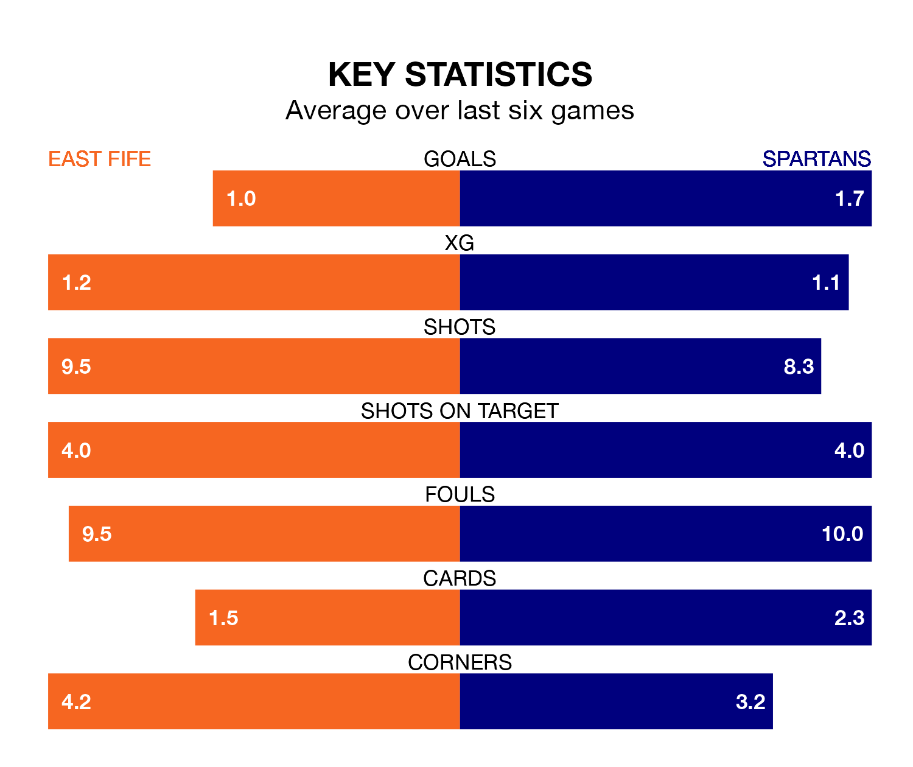

East Fife face Spartans on Tuesday seeking to protect their long unbeaten run in League Two.
The Fifers are unbeaten in five, with two wins and three draws, ahead of the 7.45pm kick-off.
They face a Spartans team who have won three and drawn one over the same number of games.
In Nathan Austin, East Fife have one of the league's most on-form strikers so far this season. He has notched nine goals in 20 appearances, to sit second in the scoring charts.
Spartans's top scorer, with nine goals in 19 games, is Blair Henderson.
With 32 goals in 19 games so far this season, the Spartans are scoring more than average in the league with 1.7 goals per game. And they are conceding fewer than average, letting in 22 goals at a rate of 1.2 per game.
The Fifers, meanwhile, are below average scorers, with 1.3 goals per game, compared to a league average of 1.4. They have also conceded 1.3 goals per game.
The visitors are fourth in the table after 19 games, of which they have won nine and drawn six, earning 33 points.
The home side are one place behind Spartans in fifth, with six wins and seven draws putting them on 25 points.
East Fife's last match was on Saturday, a 1-0 win against Stranraer, with Austin getting the goal for the Fifers.
Spartans drew 1-1 with Clyde last time out, also on Saturday, with Rhys Armstrong on the scoresheet.
Updated: 09:21 (UTC), 30/01/24